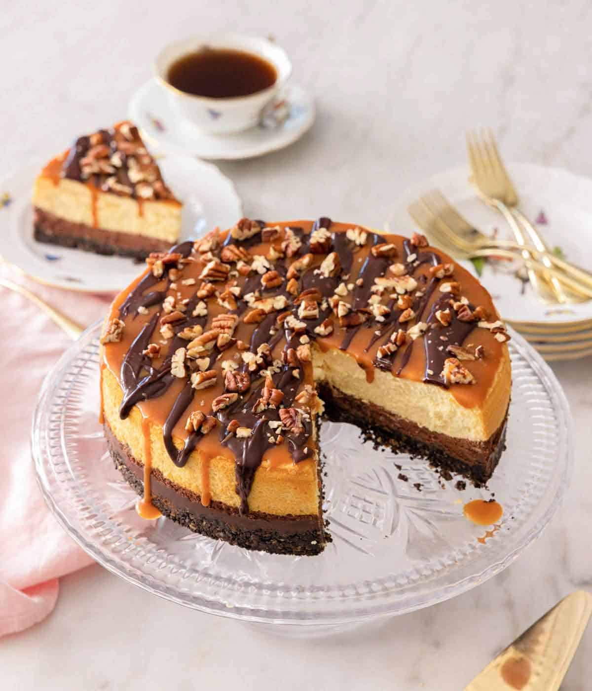

Turtle Cheesecake

Description
Rich and creamy, this Turtle Cheesecake is a showstopping dessert that is perfect for the holidays. Filled with caramel, chocolate, and pecans over a chocolate cookie crust, this cheesecake has it all! It's sure to be a huge hit, and everyone will want you to make it again.
If you're the type of person to stock up on turtle chocolates when the holidays come around, then this is the perfect cheesecake for you. You get all the flavors of the classic treat in the form of a cheesecake. Who wouldn't love this? All you need are a few simple ingredients, a mixer, and you'll have this turtle cheesecake ready in no time.
Ingredients
Crust
- 20 chocolate sandwich cookies such as Oreo's
- ½ cup pecan halves
- ¼ cup unsalted butter melted
Filling
- 4 8-ounce blocks cream cheese room temperature
- 1 cup firmly packed light brown sugar (220g)
- ¼ cup plus 2 teaspoons all-purpose flour divided (35g)
- 2 tablespoons heavy cream
- 2 teaspoons vanilla extract
- 4 large eggs room temperature
- ½ cup semi-sweet chocolate chips melted and cooled
- ½ cup caramel sauce (120mL)
- ½ cup chopped pecans
Topping
- 1 tablespoon heavy whipping cream
- 2 tablespoons semi-sweet chocolate chips
- 2 tablespoons caramel sauce
- 2 tablespoons chopped pecans
Steps
- Position an oven rack to the lowest level and the rack in the middle of the oven. Preheat the oven to 325F. Lightly spray a 9-inch springform pan with cooking spray.
- In a food processor, pulse the sandwich cookies and pecans until finely ground, about 30 seconds. Place in a medium bowl, and stir in the melted butter until well combined. Press the mixture into the bottom of the prepared pan. Refrigerate while preparing the filling, or at least 30 minutes.
- In the bowl of a stand mixer fitted with a paddle attachment, beat the cream cheese and sugar on medium speed until smooth and fluffy, about 2 to 3 minutes. Add 1/4 cup flour, cream, and vanilla. Beat on medium until smooth, about 1 minute. Add the eggs, one at a time, beating well after each addition and stopping to scrape down the bowl frequently.
- Remove 1 cup of batter, and place in a small bowl. Stir the melted chocolate into the batter.
- In another small bowl, whisk together the caramel and the remaining 2 teaspoons of flour. Stir in the chopped pecans. Spread the caramel mixture in an even layer over the cooled crust. Spread the chocolate batter into an even layer over the caramel mixture. Carefully spoon the plain batter over the chocolate filling, and smooth the top. Place on a baking sheet.
- Bring 8 cups of water to a boil. Place a large roasting pan or casserole dish on the bottom rack of the oven and carefully fill halfway with the boiling water. Place the cheesecake on the middle rack.
- Bake for 75 to 90 minutes or until the edges are pulling away slightly from the sides of the pan and the center wobbles when gently shaken. Cover the cheesecake loosely with foil after 60 minutes if the top appears to be browning too quickly. Remove from the oven and let cool on a wire rack, for 1 hour. Refrigerate, uncovered, for at least 4 hours and up to 2 days.
- In a small microwave-safe bowl, heat the cream for 15 to 30 seconds, or until steaming. Add the chocolate chips and let stand for a few minutes. Stir until smooth.
- Carefully run a knife around the edge of the pan to release the cheesecake. Remove sides of the pan and transfer the cheesecake to a cake plate. Drizzle the cheesecake with melted chocolate and caramel. Sprinkle with pecans.